Lego My Data!
1 / 3
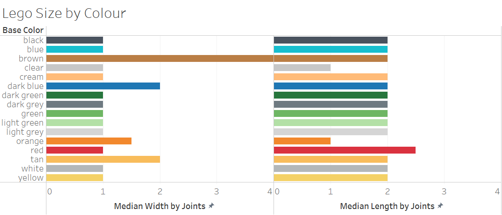
Brown and red Legos are, on average, larger than the other Legos. Most of the Legos, however, are about the same size-- 1 connecting joint by 2 connecting joints.
2 / 3
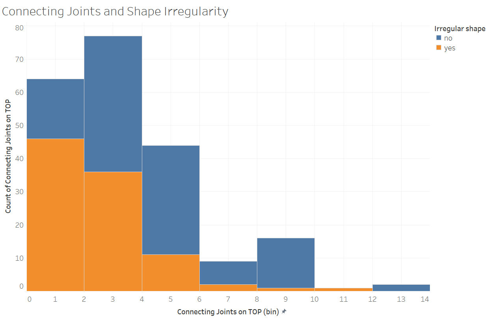
Unexpectedly, there are quite a few irregularly shaped Legos, most of which are on the smaller side.
The regularly shaped Legos instead tend to be moreso average in size.
3 / 3
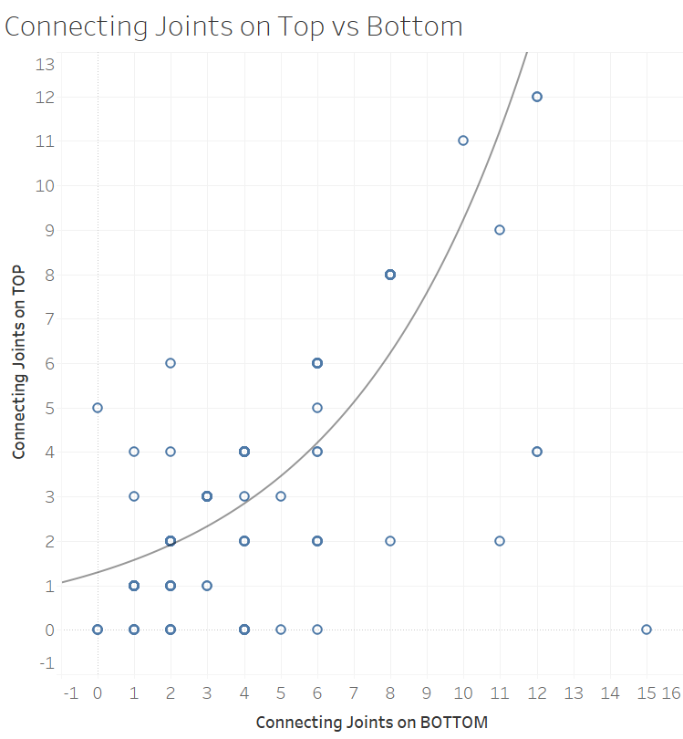
Within the set of Legos given, the connecting joints on top increase exponentially with the connecting joints on bottom.
There are several Legos that do not have connecting joints on top, most of which occur with fewer connecting joints on bottom.
What's Normal About Marathons?
1 / 6
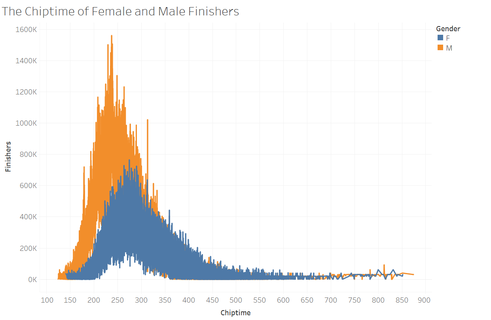
A normal curve is a type of bell-chart with a normal distribution. This means the 68-95-99.7 applies, and the mean, median, and mode are the same for the data.
This chart is an example of a right skew.
2 / 6
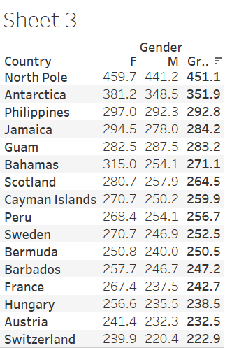
There are regularly more Female finishers than Male finishers of Marathons, and the North Pole has quite a few more finishers than any of the other countries.
3 / 6
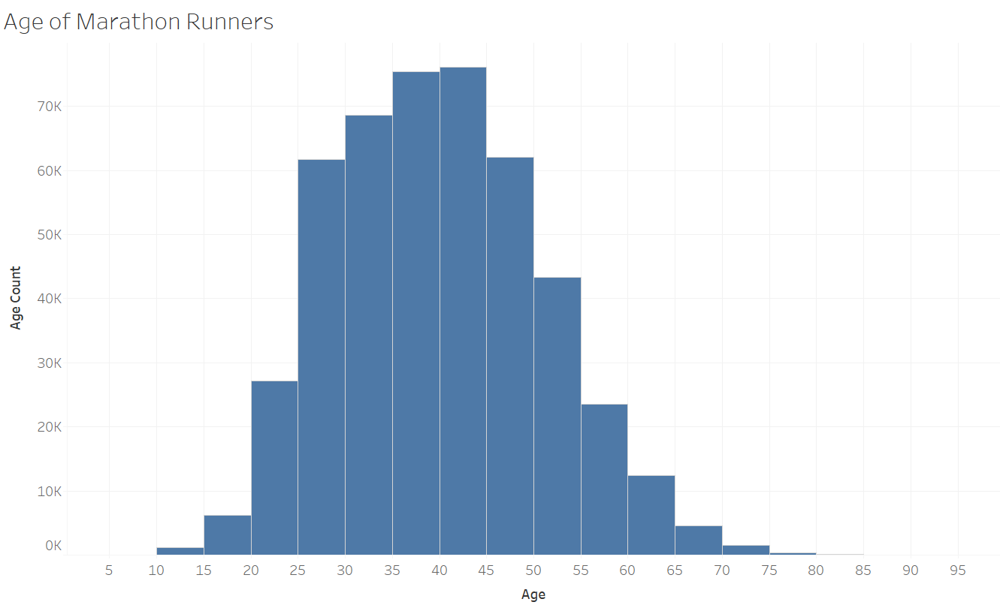
Most marathon runners are 35-45, with that age groups count well above average-- though the average is brought down by age groups like 10-20 and 60+. There is a slight right-skew.
4 / 6

Marathon runners in Europe tend to have the lowest finish time, and Americans have some of the highest finish times.
5 / 6
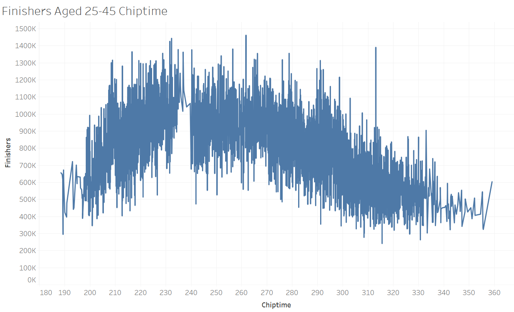
Most runners aged 25-45 finish in the 200-260 time-range, though there is a spike at 313. There is a right skew in the finishing time.
6 / 6

This pie chart shows the sum of marathon finishes in each country, other than the US, in 2010. Other than the US, the countries with the most finishers are Germany, England, and France.
What is a Healthy Child?
A z-score is the number of standards of deviations from the mean a data point is. It is calculated by subtracting the mean from the data point, and then dividing that by the standard deviation.
1 / 7
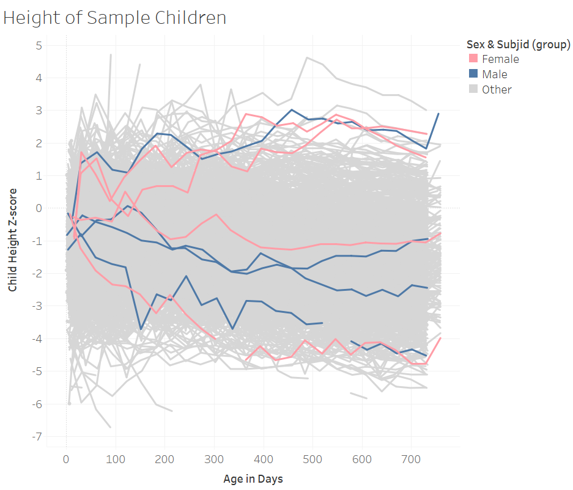
Health at birth does not correlate to a child's health later in life. Health is also unaffected by gender.
2 / 7
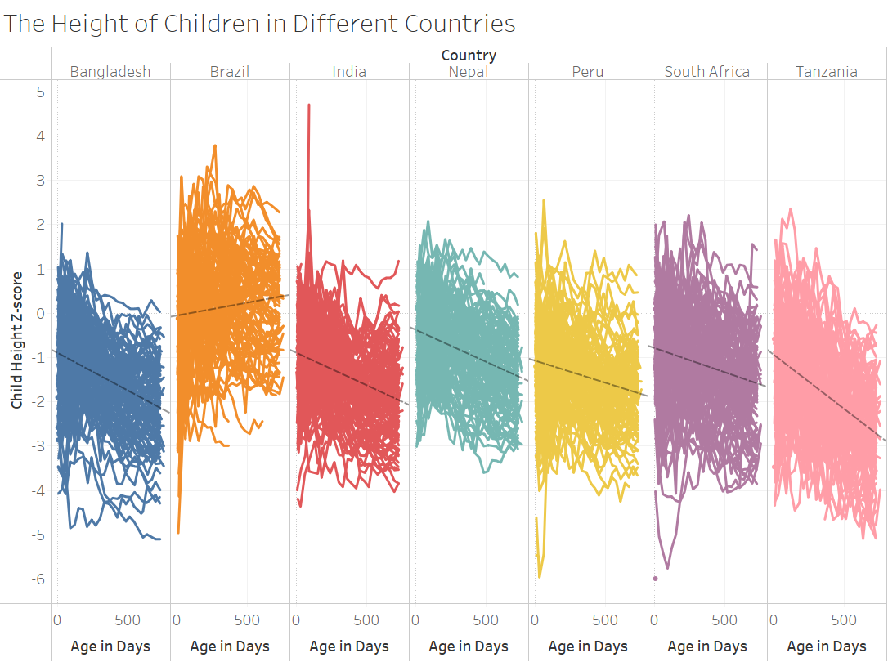
Most countries height z-score decreases as the child ages, though Brazil increases. Peru, another country in South America, still follows the general trend.
3 / 7
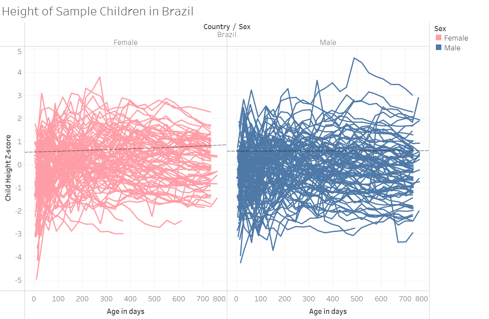
For the sample children, the z score increases more for the female over time.
4 / 7
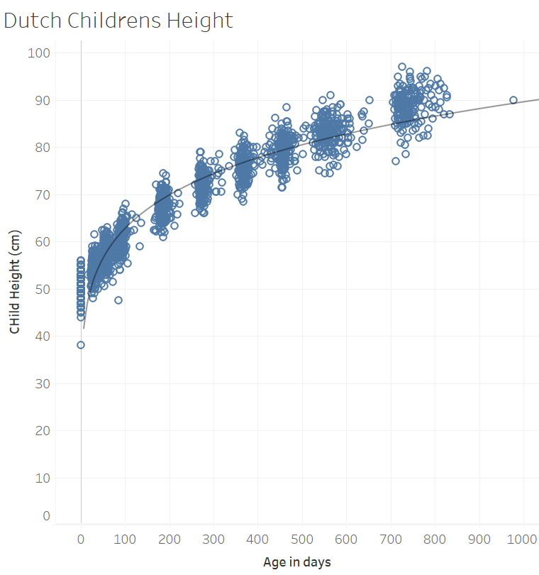
As they age, Dutch children's height increases less.
5 / 7
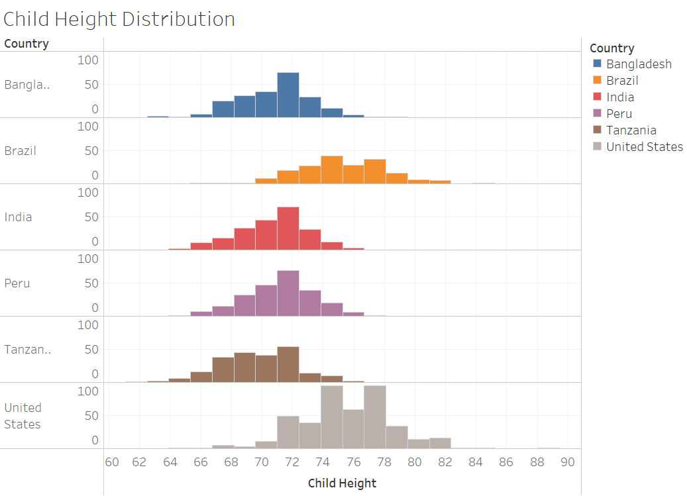
In slide 4 we saw that Brazil had a positive and increasing z-score for height. Here too, Brazil is healthier than most other countries in this study.
6 / 7
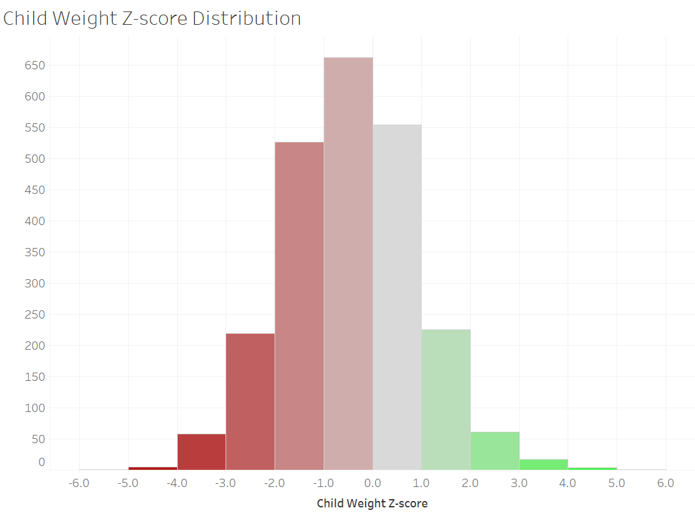
Most of the children in this study have a weight that is below average.
7 / 7

As the children's height increases, their weight increases more rapidly.